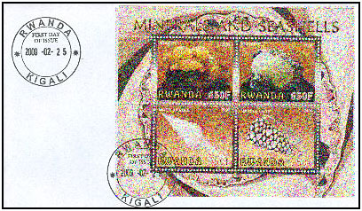
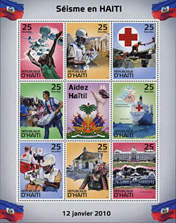
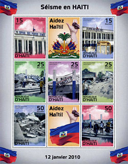
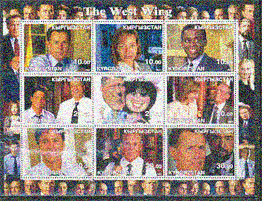
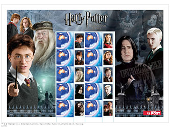
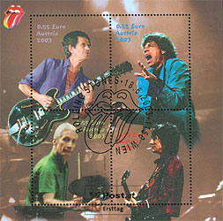

WNS - A quoi ça sert ?
|
|
|
|
Préface
La création de la WNS (WADP Numbering System - Système de Numérotation AMDP) a été décidée par l'Association Mondiale pour le Développement de la Philatélie (AMDP) et a été implémentée par l'Union Postale Universelle (UPU). Le site de la WNS a été lancé le 1er janvier 2002. Cette numérotation devait constituer la fondation pour une base des données, accessible en ligne, de tous les timbres légalement émis dans le monde, ceci pour lutter contre la production et la vente massive des timbres illégaux.
Introduction
A. Dans l'atelier "Que faire pour éviter un désastre philatélique", publié sur le site de l'UPU, l'ancien président de la FIP (Fédération Internationale de la Philatélie), Monsieur Knud Mohr, écrit ce qui suit:
l'UPU
doit communiquer immédiatement toute les connaissances de timbres faux et falsifiés à la WAD(P)P.SCENARIO DU PIRE. Les collectionneurs cessent d'être intéressés par la philatélie, en raison de la perte de crédibilité et de la mauvaise image de leur passion. Cela signifie une perte massive de collectionneurs et philatélistes, qui, à son tour, réduit considérablement le nombre de clubs philatéliques dans les États membres de la FIP, par conséquent moins de collectionneurs pour l'IFSDA et l'ASCAT, moins de lecteurs pour l'AIJP et pour l'UPU: le citoyen non-collectionneur n'a pas besoin de 30 différents émissions de timbres par an.
Conclusion: NOUS DEVONS FAIRE QUELQUE CHOSE MAINTENANT !Notre commentaire: Cela ressemble à une voix hurlant dans le désert ou venant directement d'une tragédie des Grecs de l'antiquité. On peut soutenir l'idée que la collectivité des collectionneurs n'a pas besoin de plus de 30 timbres par an émis par leur propre pays, mais cela est une autre histoire.
B. Dans la circulaire n° n ° 92 du 26 avril 2010 de l'UPU (nous avons demandé le lien à la WNS mais à la place avons obtenu par courriel ce document, il y a quelques jours), on peut lire :
L’opérateur désigné du RWANDA, Office national des postes Iposita Rwanda, souhaite informer à nouveau les opérateurs désignés des Pays-membres de l’Union de l’existence de plusieurs émissions illégales au nom de la République du Rwanda.. ... Adamite, 650 FRW (2009). Prehnite, 650 FRW (2009).
A cet égard, nous comptons sur les initiatives que prennent l’UPU et ses organes pour combattre ce phénomène. Nous comptons également sur l’action de solidarité des autres opérateurs désignés, qui voudront bien prendre des dispositions utiles en vue de nous aider à identifier les auteurs de ces actes et à les traduire en justice. ...Notre commentaire: Des émissions clandestines du Rwanda étaient encore proposées en 2009, au nom d'un pays qui a beaucoup souffert de cette peste. Nous n'avons eu aucun problème à trouver des vendeurs de ces fabrications sur le Web, de même que les FDC (voir ci-dessous - l'image est intentionnellement floue).

Depuis 10 années le Rwanda continue de compter sur l'UPU et sur d'autres opérateurs "pour combattre ce phénomène" et pour "identifier les auteurs de ces actes et à les traduire en justice". Nous allons démontrer dans cet article que le Rwanda ainsi que de nombreux autres pays touchés attendent en vain sur des actions pour l'éradication des émissions clandestines et pour obtenir justice !
PWO, UPU et les timbres illégaux
L' Organisation des Webmasters Philatéliques (PWO), est une association sans but lucratif, domiciliée en Suisse, qui compte plus de 350 membres de tous les continents, créée pour promouvoir, développer et soutenir la philatélie par la création de sites philatéliques sur Internet.
La PWO a étroitement collaboré depuis ses débuts avec l'Union Postale Universelle dans la lutte contre les timbres illégaux. Pour cette raison, aussi bien que pour l'information sur les émissions illégales, les circulaires UPU ont été publiés régulièrement sur le site PWO. La PWO, dans le souci direct avec le Bureau international de l'UPU, à Berne, a consacré ce sous-site à la lutte contre les timbres illégaux.
Comme au milieu de l'année 2003 l'UPU a commencée par la publication des circulaires se référant aux timbres illégaux sur son propre site, nous ne les avons plus publiées sur le nôtre et nous nous sommes limités à proposer les liens vers les pages où ils pourraient être trouvés. Malheureusement, ces liens se sont rompus au milieu de l'année 2009, suite au remaniement du site le l'UPU. De nouveaux liens vers les circulaires sont paru sur le site de l'UPU en Septembre 2010, en laissant rompu toutes les références vers elles sur les sites Web à travers le monde.
Ce que frappe l'œil, c'est que dans les dernières années les circulaires qui font référence à timbres-poste illégaux a diminué en nombre et sont de plus en plus noyés dans une mer de circulaires portant sur d'autres sujets. L'explication n'est pas celle donnée par le WNS (le nombre des timbres illégaux aurait diminué de façon drastique grâce à son activité propre), mais elle est liée à deux faits:
- Auparavant, il a été l'UPU qui a fait les recherches pour trouver les timbres-poste illicites. Il a également été l'UPU qui a demandé aux pays de les dénoncer; pour cette raison les circulaires sur timbres ont été principalement consacrée aux timbres-poste illégaux.
- Plus tard, avec le développement de la WNS, la recherche sur les timbres illégaux a été plutôt poussé vers les pays touchés; au même temps les critères pour pouvoir dénoncer les timbres-poste illégaux sont devenu plus strictes.L'exemple le plus récent de timbres illégaux - l'émission sur le tremblement de terre de Haïti de 2010
Les annonces de la nouvelle émission ont été faites dans la presse philatélique et par les distributeurs en Europe, Asie, Amérique du Nord, les nouveaux timbres ont été proposés à la vente.
Un certain nombre de vendeurs ont reçu des exemplaires d'un certificat d'authenticité signé par Margarette Emile, directeur général de la "Haïti Postal Corporation", affirmant que les feuilles seraient des émissions légitimes de la Poste Haïtienne. Malheureusement, comme dans le cas de la série célèbre haïtienne Audubon de 1975, l'émission du tremblement de terre en question n'a pas été autorisée par les autorités compétentes. Elle a été qualifiée par des fonctionnaires au sein du gouvernement haïtien comme une émission non autorisée, sans validité postale. Source.


Algidras Satas de Bayart et Stamperija KTD. de Vilnius, en Lituanie, souvent mentionnée en ligne pour son implication dans la production des illegaux, a déclaré dans un courriel à Linn's: "Notre entreprise a signé une licence irrévocable avec l'Administration Postale de Haïti en Décembre 2009 pour 4 émissions philatéliques". Source: Linn's Stamps News Online 2010.
Après plus des 7 mois depuis leurs apparition, ces timbres ne sont pas dénoncés dans aucune circulaire de l'UPU. Concernant la WNS, elle attend depuis 2004 des timbres de Haïti pour l'enregistrement...Quand/comment les illégaux ont été combattus
Pour informer nos membres, nous avons essayé de trouver des documents sur le Web qui présenteraient la contribution de la WNS par un présumé compte rendu sur ces émissions illicites. Malheureusement, nous n'avons pu trouver aucun d'entre eux. Pour cette raison nous avons demandé à la WNS de nous aider dans nos recherches. Déjà il ya plusieurs mois, en tant que membre de cette organisation, nous avons essayé d'obtenir les mêmes informations de l'AIJP (Association Internationale des Journalistes Philatéliques, membre de l'AMDP). Jusqu'à présent, nous n'avons pas reçu de réponse d'aucune de ces organisations. Pour cette raison nous avons décidé de poursuivre de recherches par nous-mêmes, et à utiliser autant que possible les documents de l'UPU et de WNS qui se trouvent sur leurs sites respectifs
Nous commencerons par rappeler brièvement à nos membres et lecteurs comment a commencé la lutte officielle contre les timbres illégaux.
La première action est venue de l'UPU, quand en 1999 elle a commencée à inciter les pays membres à dénoncer les émissions illégales. Grâce à Mme Maria Libera, qui a été chargée de la recherche, un nombre important d'émissions illégales ont été identifiées puis divulguées dans les circulaires. Cette approche avait du sens, et a représenté un bon départ car il a mis en évidence les timbres prohibés. La tâche était plutôt bon marché et les résultats étaient visibles. Comme sur le site de la PWO, le contenu de ces circulaires a été diffusé sur de nombreux sites philatéliques sur le web. L'inconvénient de cette approche est qu'une seule personne, même avec un peu d'aide auprès d'amis (de la philatélie), ne pouvait pas approfondir ses recherches et parfois a exposé le bureau international de l'UPU à des attaques de certains hommes d'affaires douteux, qui avaient derrière eux des avocats, et de l'argent à dépenser.
La prochaine étape a été la création de l'WADP et la dernière, la création de la WNS. Comme leurs auteurs précisaient: "Mis au point par l'UPU et l'Association Mondiale pour le Développement de la Philatélie, le système de numérotation de l'AMDP (WNS) est entré en vigueur le 1er janvier 2002. A terme, l'objectif était de constituer une base de données de l'ensemble des timbres-poste légaux émis par les Pays-membres et territoires de l'UPU à partir de cette date".
Veuillez noter la démarche inverse prise par leurs concepteurs: alors que les Circulaires ont été axés sur les timbres illégaux, le WNS l'est uniquement sur les émissions légales. Cela ne peut fonctionner que si tous les timbres en cours de validité sont répertoriés, une tâche gigantesque, en particulier lorsque le nombre des émissions de timbres a augmenté de manière quasi exponentielle. Une telle tâche nécessite des moyens importants et un côut élévé, incomparables à ceux qui ont été investi dans les circulaires. Commençons avec l'argent, parce que déjà depuis le temps de Cicéron: L'argent est le nerf de la guerre.
WNS - combien ça côute et où va l'argent
La WNS est fière d'annoncer sur son site Web ... qu'il y a 45.542 timbres inscrits (août 2010). Au prix de l'inscription de CHF 50, payés par chaque Administration Postale pour chacun de ses timbres enregistrés à l'UPU / WNS, cela nous amène à ce jour environ:
2.3 millions de Francs suisses ou 2.2 millions de dollars ou 1.7 millions d'Euros
Après une courte compétition entre les différentes organisations philatéliques, membres de la WADP, l'argent apporté par WNS a été utilisé pour couvrir non seulement les dépenses évidentes pour l'informatique, un établissement placé stratégiquement quelque part aux antipodes, mais aussi pour les frais supplémentaires pour les employés, des conférences et voyages des différents fonctionnaires WADP. Bien sûr que, une fois mis en place, et après de nombreuses années de fonctionnement, c'est quelque chose qui est difficilement à défaire, étant perçu par les bénéficiaires comme une tâche et un besoin justifié.
WNS - Sur son intégralité présumée
Comme dès Août 2010, nous avons compté pas moins de 181 pays et territoires participant au WNS, cela semble à première vue très impressionnant. Mais l'étude de la liste des pays participants et de l'état de leur activité d'enregistrement révèle des résultats moins impressionnants. Prenons quelques exemples et regardons avec plus d'attention.
Une première surprise: l'Allemagne, un grand pays, avec une activité très importante, mais ou l'administration des postes ne participe pas à la WNS. Pourquoi? Bonne question ... Y a-t-il quelque part une relation avec la privatisation des services postaux allemandes et une manque d'intérêt pour des projets sans résultats ?
Une autre question inquiétante. Pourquoi les pays avec tant d'émissions de timbres, comme ceux qui sont des clients de l'IGPC, depuis Aitutaki à la Dominique, à la Gambie, à Palau, au Turkménistan et à Tuvalu, pour n'en citer que certains d'entre eux, ne participent pas? Question suivante: Faut-il prendre toutes leur productions pour des clandestines ? Allons donc, bien sûr, mais comment un collectionneur de timbres débutant (pour la protection desquels la WNS a effectivement été créée !) peut le savoir ?
Enregistrements 2002 7 2003 14 2004 91 2005 Timbres en attente d'enregistrement 2006 Timbres en attente d'enregistrement 2007 Timbres en attente d'enregistrement 2008 Timbres en attente d'enregistrement 2009 Timbres en attente d'enregistrement 2010
19
2010
Timbres en attente d'enregistrement
Total 1096 Les USA sont un pays exemplaire, présent dès le début dans la WNS et qui a enregistrée en temps utile ses émissions philatéliques. Juste est de constater que c'est un pays qui n'a pas besoin de WNS comme protection parce qu'il n'y a pas de timbres illégaux, les producteurs n'ont pas l'imprudence de mettre le nom de ce pays sur leur "timbres". Ce fait est valable pour la majorité des pays qui participent activement dans WNS et qui contribuent en payant ses frais de fonctionnement.
Comment la Chine, qui en 2004, effectua 91 enregistrements, puis s'arrêta tout à coup. Pourquoi? Nous ne le savons pas. Sûrement non pas par manque d'argent puisque dans ce même temps la Chine a organisé des événements très importants et chers. Devons-nous considérer que tout ce que la République Populaire de Chine a émis après 2004 comme des illégaux en cours? Ceci est absurde, mais alors une question évidente revient: A quoi sert le WNS ?
Enregistrements 2002 2 2003 Timbres en attente d'enregistrement 2004 Timbres en attente d'enregistrement 2005 Timbres en attente d'enregistrement 2006 Timbres en attente d'enregistrement 2007 Timbres en attente d'enregistrement 2008 Timbres en attente d'enregistrement 2009 Timbres en attente d'enregistrement 2010
8
2010
Timbres en attente d'enregistrement
Total 98 Deux exemples différents, mais très pertinents suivent. Le Burundi (BI) a commencé avec la WNS en 2002 et les timbres enregistrés couvrent 6 ans. Pour 2005 et 2006, la situation est claire: pas de timbres émis et donc toutes les timbres sur le marché de cette période ne peuvent être que des illégaux. La bonne question est de savoir comment trouver quelque chose a propos de la légitimité des timbres éventuellement émis en 2003 ?
La situation est bien pire pour la République Démocratique du Congo (CD). Pour 2002, nous savons d'après la liste UPU qu'il y avait émission de seulement 2 timbres légaux. Mais quelle est la situation au cours des 7 années suivantes, pour lesquels nous apprendrons qu'ils sont : "en attente d'enregistrement" ? Ce n'est pas un cas unique, mais c'est aussi valable, dans la base de données du WNS, pour le Cameroun, Haïti, le Togo, la Mauritanie, le Mali et de nombreux autres pays, soit exactement ceux qui sont "en danger" et pour lesquelles les collectionneurs de timbres sans méfiance dans le monde entier ont besoin de protection contre les émissions clandestines.
Au lieu de se concentrer sur le nombre gérable de timbres illégaux existantes et les lister pour en faciliter la consultation, la WNS fournit une liste chroniquement incomplète de timbres illégaux. Il est irréaliste d'espérer qu'un jour, tous les pays (et en particulier ceux avec le plus grand problème avec les timbres illégaux) entrerons chaque timbre unique dans le WNS et que ils le ferons en temps opportun. En outre, il est un gaspillage d'argent et d'énergie pour que les pays sans de problèmes (comme par exemple les États-Unis) de remplir les tells entrées dans une tel base de données.
Et encore, nous ne parlons pas ici des timbres émis avant que la WNS ne soit apparue, des années qui ne sont que partiellement couverts par les circulaires de l'UPU (indisponibles actuellement sur les sites de l'UPU, WNS ou autres). Ceci a été dès le début une grave erreur de conception de la WNS.
WNS pour aider à identifier les clandestins
Nous avons pris au hasard en tant que pays le Kirghizistan et avons cherché à travers le bien connu Marlen Stamps. Comme première lecture nous avons trouvé: KYRGYZSTAN KIRGHIZIA (USSR) - Kyrgrzstan 2002 Le feuillet "THE WEST WING" de neuf timbres (NOTE: L'origine de ces timbres peut être discuté et ils peuvent être répertoriés comme illégaux. Nous suggérons donc que vous les achetiez seulement parce que vous les aimez. NOUS LES PROPOSONS PARCE QU'ILS SONT SUR LE MARCHE.)

"Kyrgyzstan" 2002 "The West Wing" (intentionnellement floue)
Enregistrements Timbres en attente d'enregistrement Timbres en attente d'enregistrement Timbres en attente d'enregistrement Timbres en attente d'enregistrement Timbres en attente d'enregistrement Timbres en attente d'enregistrement 59 31 2010
Timbres en attente d'enregistrement
La bonne question est de savoir si ce feuillet est légitime ou non, nous allons donc essayer de le savoir. Parce que les sites UPU/WNS ne publient pas en ce moment leurs circulaires, nous sommes allés voir Kyrgyzstan à la page pour les circulaires sur le site PWO. le feuillet "West Wing" n'est pas listé sur notre site (parce que cela a échappé à Mme Libera en 2002, ou que elle n'avait pas assez de documentation. Qui sait et qui se soucie encore ?).
Eh bien, voyons ce que dit le site WNS. "Le Krygizstan" recherché comme ci-dessus (selon l'orthographe de la WNS) aboutit comme suit pour 2002: "Timbres en attente d'enregistrement" . La recherche directe affiche: Votre recherche n'a pas aboutie, le programme d'émission 2002 n'est pas disponible.
Conclusions. Même si ce n'est de toute évidence pas une émission légale, nous n'avons aucun moyen de le prouver, donc l'accusé a le bénéfice du doute... Encore une fois, cette WNS constitue une énorme dépense, mais ces résultats sont maigres (ce qui se dit mieux en allemand: ausser Spesen nichts gewesen)!WNS en tant que aide aux pays en développement
La Circulaire du BI de l'UPU n° 92 du 26 avril 2010, précité, est plus que clair à cet égard. L'opérateur postal qui travaille pour ce pays attend "les initiatives que prennent l’UPU et ses organes pour combattre ce phénomène" et "à identifier les auteurs de ces actes et à les traduire en justice". WNS, dans ses 9 (!) années de fonctionnement, n'a pas atteint le premier but, et elle n'est pas conçue pour atteindre le second.
WNS comme une arme dans la lutte contre les émissions illégales ?
Est-ce que la WNS a essentiellement contribué à la réduction du nombre d'émissions illégales? Comme mentionné précédemment, nous ne pouvions pas obtenir de réponse à cette question par la WNS ni pu trouver la réponse sur le Web.
En fait, nous n'avons pas remarqué une réduction d'émissions clandestines offertes sur le marché. Elles sont toujours facilement disponibles sur le Web mais aussi dans des paquets (pochettes), etcIl y a plusieurs facteurs qui ont éventuellement affecté la production d'illégaux, comme le ralentissement économique, l'augmentation et la diversification de la production de timbres des administrations postales et une meilleure prise de conscience des collectionneurs, grâce aussi aux sites web philatéliques et a la presse philatélique. Ce sont des facteurs qui ne sont pas liés à la WNS. Voir en dessous deux tueurs efficaces d'émissions illégales, venant de l'Australie et d'Autriche, du matériel très attractive et populaire.


WNS à titre de preuve devant les tribunaux
Nous n'avons jamais entendu jusqu'à présent sur la tenue d'un procès impliquant les producteurs ou vendeurs des illégaux de timbres, les concepteurs, les imprimeurs ou les vendeurs. Dans ce contexte la WNS n'est pas donc pertinent, en n'étant pas suffisamment complète.
WNS comme système de numérotation
Les collectionneurs de timbres ont grandi avec Scott, Stanley Gibbons, Michel, Yvert & Tellier et d'autres catalogues , qui offrent beaucoup plus d'informations que la WNS. Oui, ils ne sont pas gratuits (rien ne l'est, même pas la WNS), mais certaines de leurs éditions de magazines en ligne ne sont pas chers non plus. Pour seulement 10 $ par année (!), on peut obtenir en ligne accès à de nombreux magazines philatéliques (également à de nombreuses éditions antérieures) qui annoncent les nouvelles émissions plus rapidement et mieux que la WNS.
Il est un fait que dans la communauté philatélique, personne n'utilise le système de numérotation de l'AMDP ! Parce qu'il n'a pas été pensés pour en faire, ceci ne le rend pas plus utile.
WNS - L'utilisation du site
En 2009 il y avait 104.106 visiteurs du site de la WNS. Ne vous laissez pas tromper par cette apparence de nombre élevé de visiteurs, à comparer avec les millions de visiteurs des sites Internet des éditeurs des catalogues de la philatélie cités ci-dessus.
WNS - Les projets futurs de la WADP
Nous pouvions lire dans le document: WADP - Plan de développement philatélique pour la période 2009–2012" , qui est disponible sur le site UPU:
– à envisager les moyens de créer un modèle de base de données pour la vente en ligne de timbres-poste pour le développement des pays les moins avancés. ...
Il convient de souligner que la WNS, initialement créée pour lutter contre les émissions illégales, peut aussi être un puissant outil de promotion et de vente quand elle relie un émetteur, autorité postale, à un site de vente en ligne.De toute évidence, la WNS doit et veut faire face a l'avenir de leurs enfant. Dans une entreprise comme la vente des timbres, avec des cycles économiques courts, il n'y a pas nécessité d'une telle base de données énorme pour la création de sites de vente en ligne pour les pays les moins avancés. Une petite application, concentrée et standardisée, et des petites bases de données crées ad hoc sont beaucoup plus appropriés poue cette tache, devenue aujourd'hui banale.
Conclusion
Parce que la WNS par sa conception ne couvre pas l'éventail complet des émissions illégales, parce qu'en neuf ans, elle n'atteignait pas le degré de complétude qui la rendrait utile, parce que l'utilisation du site est faible, parce que sa base de données n'est pas utile pour des développements prometteurs l'avenir, parce qu'elle n'a pas réduit le nombre de timbres illégaux dans le commerce, parce qu'elle n'aide pas les pays en développement, parce qu'elle n'a pas atteint son objectif principal, celui d'aider les collectionneurs de timbres pour éviter les émissions illégales, et parce que ses coûts élevés ne sont pas reflétés dans ces résultats :
La WNS échouée devrait soit repensée à fond ou disparaître
Voir ci-dessous pour les conditions de reproduction de cet article ou de parts de celui-ci.
Cet article, écrit par M. Victor Manta, Président de la PWO et membre de l'Association Internationale des Journalistes Philatéliques (AIJP), est un acte de journalisme philatélique.
Mention légale: les sources d'information sont crédités, soit par des liens correspondants ou explicitement et les extraits sont délibérément maintenus courts, en conformité avec la doctrine de Fair Use.
Publié: 16.08.20101.
Revisé: 30.09.2010. |